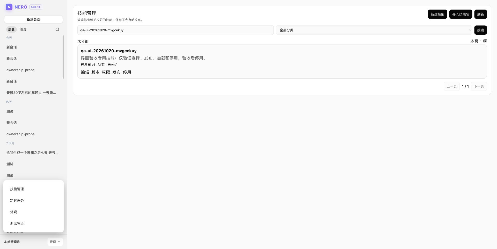

N
NERO / AGENT
SKILLS / REUSABLE WORK
技能系统
把一套做法，
变成可复用的能力。
技能包有 SKILL.md、资源与运行时清单。导入后先成为草稿，发布后才进入对话；版本和权限都留在服务端。
IMPORT
导入
技能包进入校验，检查名称、结构与运行时清单。
DRAFT
草稿
内容可编辑；未发布版本不会出现在对话里。
PUBLISH
发布
版本、可见范围、授权与发布备注一起落库。
SELECT
选择
输入框用斜杠命令或技能按钮加载。
PIN
锁定
定时任务触发时解析到已发布版本。

图 03 / 技能管理：版本、权限、发布、停用LIVE UI
VISIBILITY私有 / 全局 / 受限
VERSION草稿 → 发布
PERMISSION使用 / 编辑 / 发布
LIMIT单任务最多 5 个
/qa-20261020-mvgcekvy